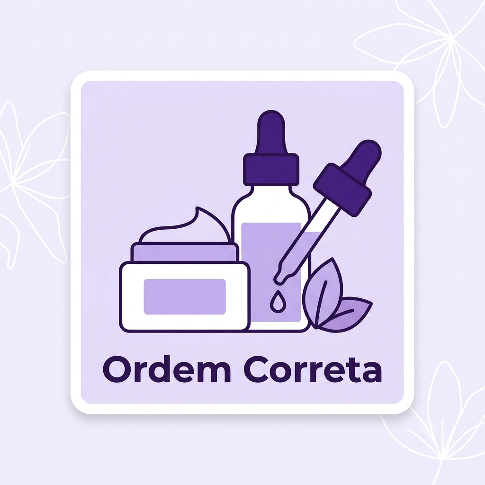
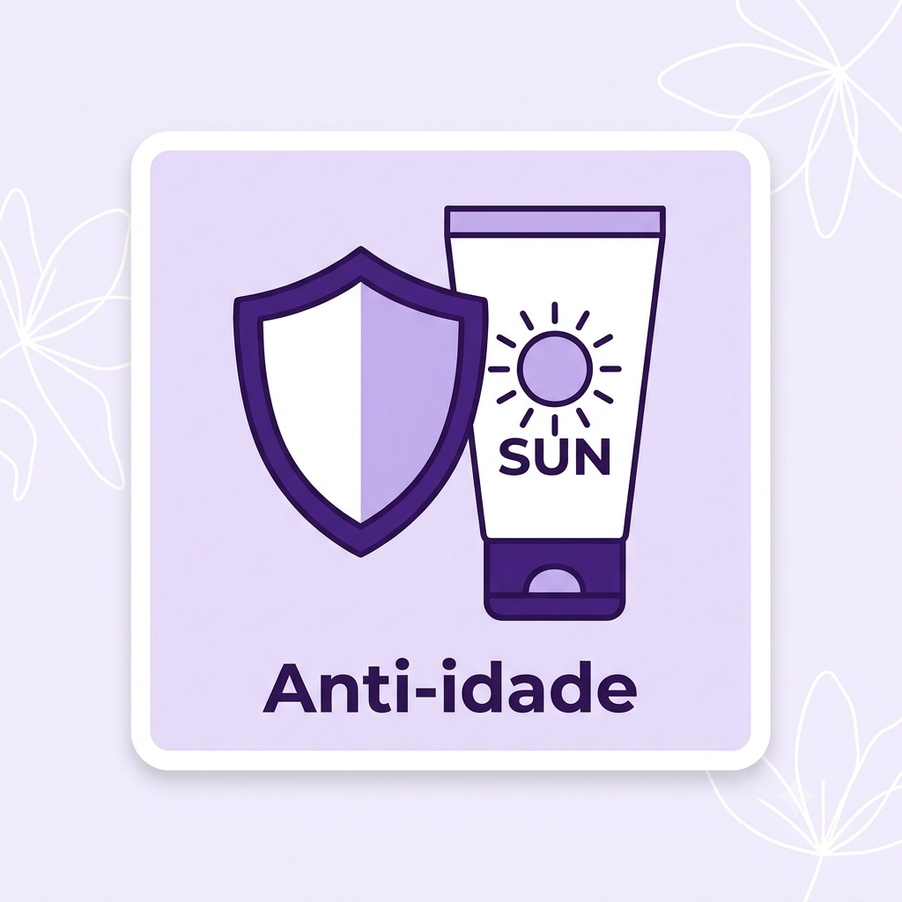
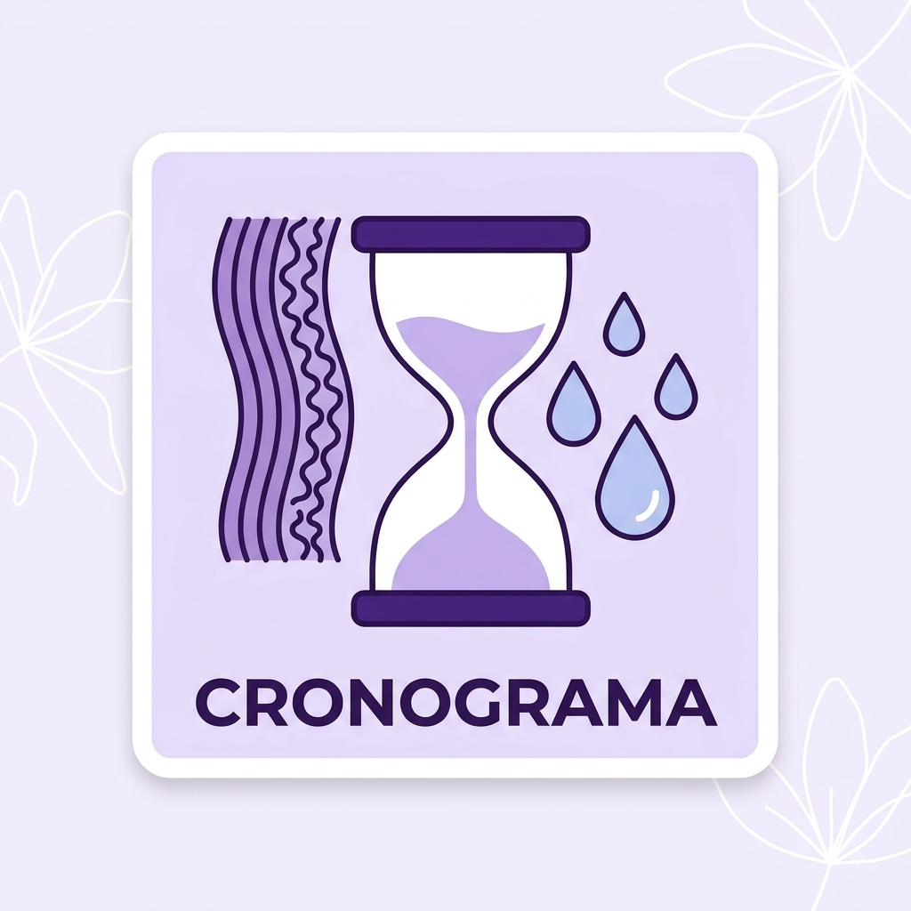
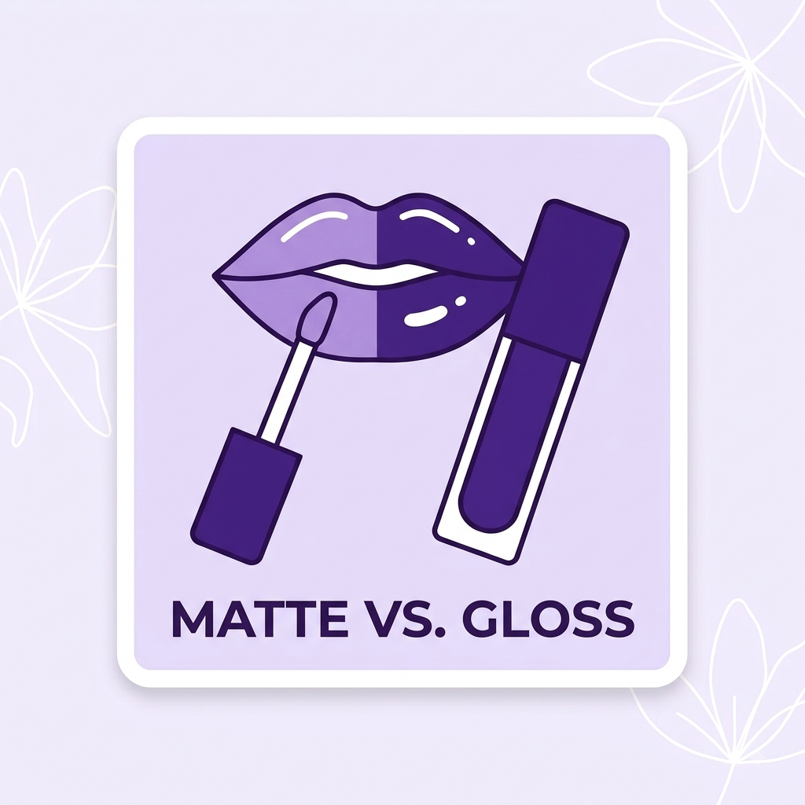
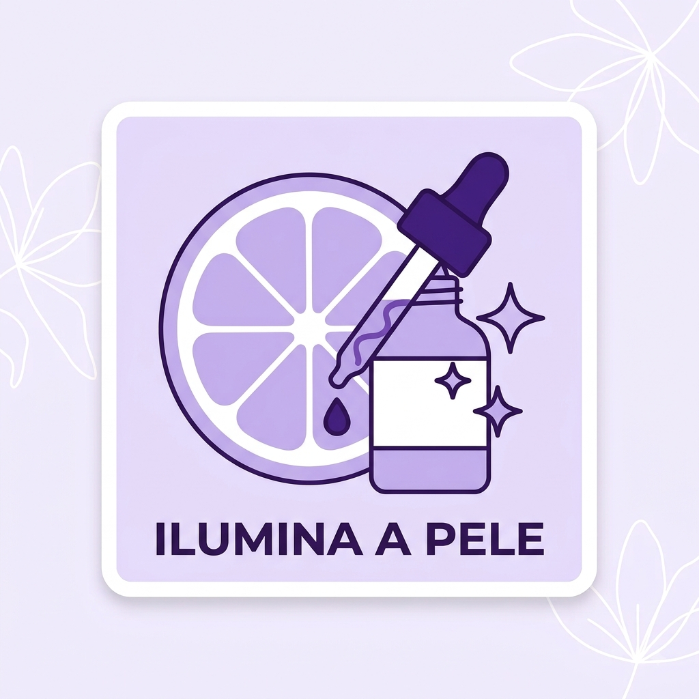

A Ordem Correta da Rotina de Skincare
Por: Nara Moura
Aplicar os produtos na ordem certa garante máxima absorção: comece pelo limpador facial, passe para o tônico, aplique os séruns e finalize com o hidratante e protetor solar.
Compartilhando dicas, segredos e resenhas sobre cuidados e produtos de beleza!

Por: Nara Moura
Aplicar os produtos na ordem certa garante máxima absorção: comece pelo limpador facial, passe para o tônico, aplique os séruns e finalize com o hidratante e protetor solar.

Por: Nara Moura
Nenhum creme antissinais funciona bem sem proteção contra os raios UV. Usar filtro solar diariamente previne manchas, rugas e mantém a pele jovem e saudável por muito mais tempo.
Fonte: Dicas da Nara

Por: Nara Moura
Seus fios precisam de equilíbrio! Alternar entre hidratação (reposição de água), nutrição (óleos) e reconstrução (massa) devolve a vida e o brilho para qualquer tipo de cabelo.
Fonte: Guia de Beleza

Por: Nara Moura
Enquanto o efeito matte entrega alta durabilidade e elegância, o acabamento glossy voltou com tudo para dar volume e aspecto saudável aos lábios. Qual é o seu favorito?
Fonte: Tendências da Moda

Por: Nara Moura
Um poderoso antioxidante que ilumina a pele, uniformiza o tom e ajuda a combater os radicais livres. Ideal para ser aplicado logo pela manhã antes do protetor solar!
Fonte: Segredos de Skincare

Por: Nara Moura
Pincéis sujos podem acumular bactérias e causar acnes! Lave-os a cada duas semanas com sabonete neutro ou shampoo infantil e deixe secar na horizontal.
Fonte: Dicas Práticas